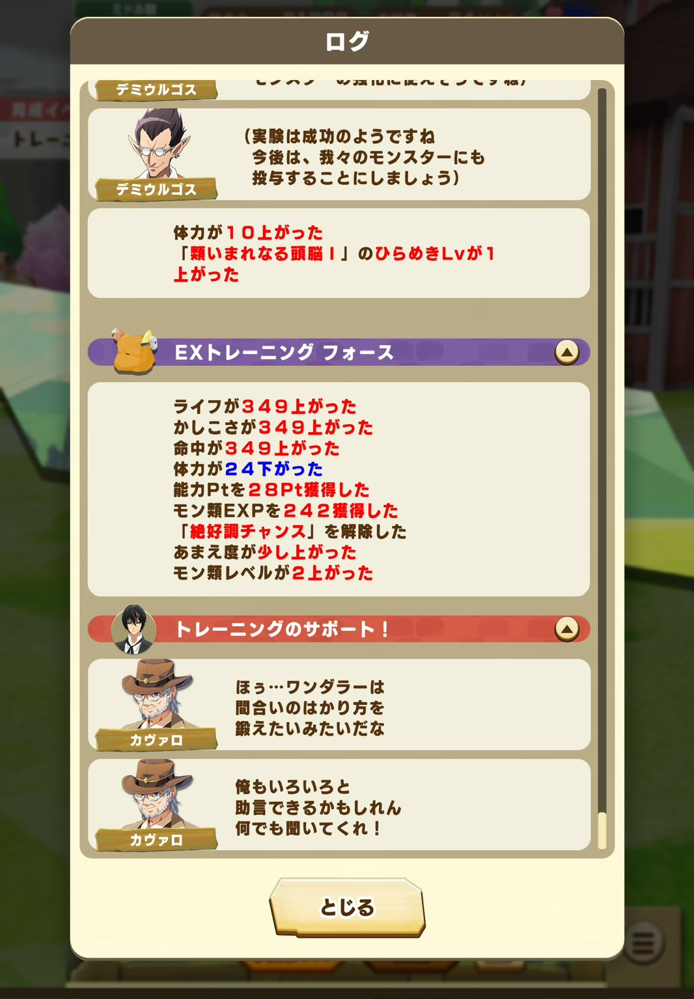

絶好調チャンス×ピーク×5人ひかり×大成功で3ステ349（大成功時のカンスト値）上がるトレーニングが起こることがあります。稀にしか起きないですが最高に気持ちいい瞬間ですね。
ただ逆に考えると一番低いステのところもカンストするということは、一番高いところのステは受け入れがたいほど無駄になってしまっているということでもあります。
上昇したステータスの2倍くらい無駄になってしまったと考えると今後はトレ数値上限突破のアシスト能力の価値が上がっていくかもしれませんね。
逆に考えるとアシストカードはそこまで強くなくても強力なトレーニングは起こせるということでもあります。完凸MRを何枚も用意しないと最上位の総合力やトレーニングはまねできないと思っていませんか？実際は完凸MRなんて全然ないのに10位以内に入ってるプレイヤーもいますし、むしろ全部完凸で遊んでいるランカーなんて本当に片手で数えられるくらいしかいません。誰でもめちゃつよトレーニングは起こせます。ただ試行回数は必要になってくるのであきらめずに挑戦し続けましょう。
そのためにもう一つ重要なことがリソースを偏らせることです。ここで言うリソースとはガチャを引くためのダイヤやMRアシストカードの凸を上げるための極意の書・真です。ある程度モン類やオーラをしぼって、このモンスターや血統や色と共に歩んでいくという決断が出来ると、課金をしなくとも最上位勢と並ぶことができます。そうやって遊んでいる無課金のトップランカーが結構多いイメージがあります。逆に複数のモン類やオーラを追いかけてしまうと強化が中途半端になり育成の伸びに刺激を感じにくくなります。無課金でも上にいきたいという人はリソースを愛すべきor強いモンスターの強化にしぼっていくといいと思います。
ただやっぱり1050近くステータスが上がった時の爽快感と5000近く総合力が上がった時のインパクトがやみつきになりますね。管理人は意志が弱くリソースを絞り切れずにハチャメチャにつぎ込んでいるのでみなさんはまねしないようにしましょう。そうです。反面教師として記事を書いているのです。みなさんも最強トレを目指して育成しまくりましょう。